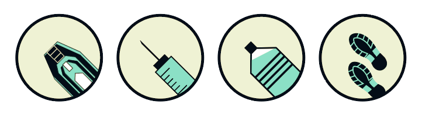
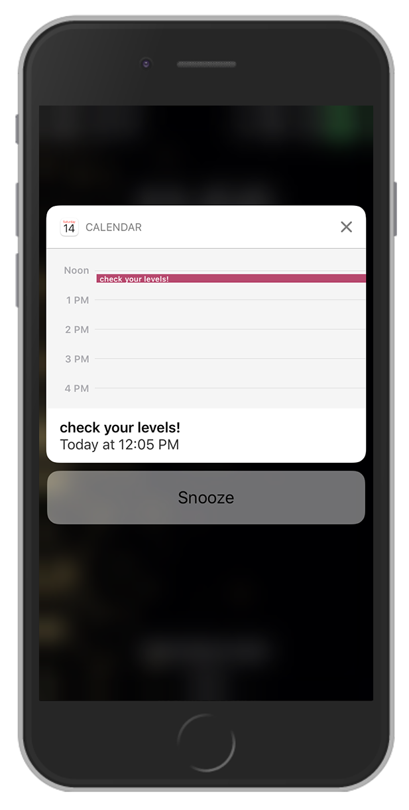

Currently, I am not working on a specific personal project. I spend most of my time building custom websites for the clients of my employer, improving internal products, and creating new design templates in Drupal 7. I spend personal time creating new physical art projects such as watercolors to keep my skills fresh and creativity flowing.
Diabetes is overwhelming. Managing diabetes is hard. There are so many numbers to track. A routine needs to be built. diaBEATthis will help.
More info...When considering the interface design, my biggest focus was the potential audience for diaBEATthis. Research has shown the most likely age group for a new Type 2 Diabetes diagnosis is 45 -67 and the average age for a Type 1 diagnosis is 14, so I wanted to make sure diaBEATthis is accessible to all ages. Anyone experiencing a new diagnosis will be overwhelmed with all that entails, so my goal was to create a design that is positive, easy to use and interact with, conversational and personal. This drove the color selection towards calming blues and approachable reds. I chose to use a clean layout to minimize barriers to use. With the dashboard layout, I wanted to make sure users can quickly see and understand the data they’re tracking and make the navigation intuitive and easy to read.
Starting with the knowledge of my audience, I worked through a quick wire-framing process to get the main page layouts. I landed on having a static top navigation with just a few options to reduce clutter, followed by a two column main section. On the mobile site, I knew I wanted to replace the footer with intuitive icons for each tracked data point, and scale down the header navigation into a drop down menu. Because the page is written using Skeleton, each section automatically resizes and stacks for a clean view.
